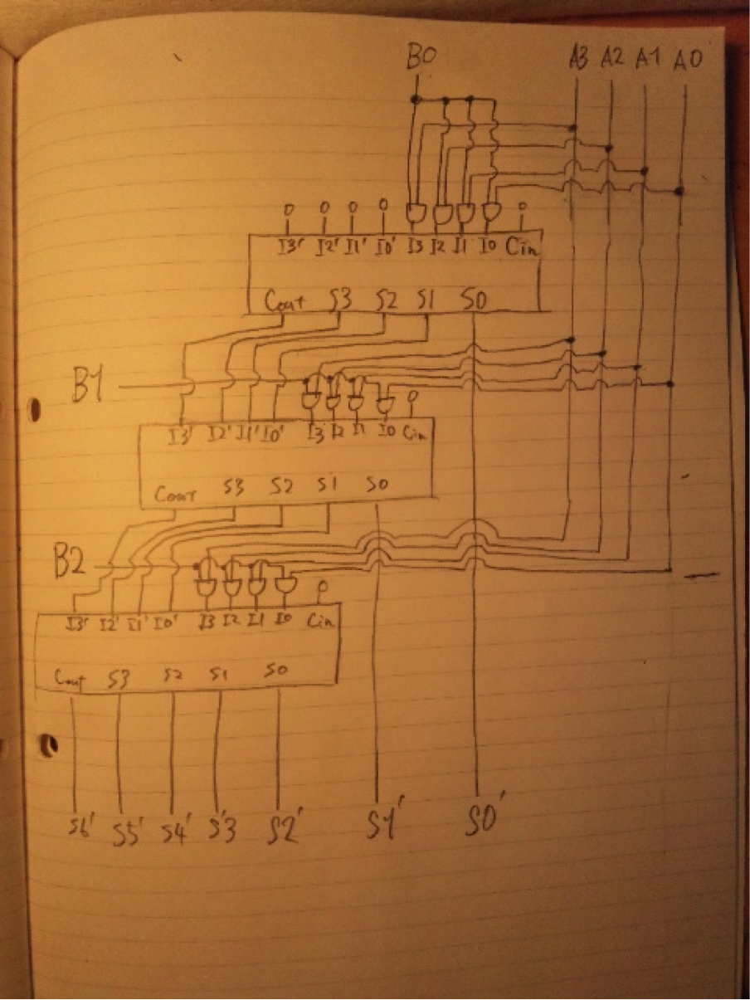

a c r o s ・ s
・ c ・ o s t s
編集距離：３
A{ sx == px : 0 , sx != px : 1 }
D(s1s2...sn,q1q2...qm) = min( D(s1s2...sn-1,q1q2...qm)+1 , D(s1s2...sn,q1q2...qm-1)+1 , D(s1s2...sn,q1q2...qm)+A )
| D | I | S | T | A | N | C | E | ||
| 0 | 1 | 2 | 3 | 4 | 5 | 6 | 7 | 8 | |
| A | 1 | 1 | 2 | 3 | 4 | 4 | 5 | 6 | 7 |
| R | 2 | 2 | 2 | 3 | 4 | 5 | 5 | 6 | 7 |
| T | 3 | 3 | 3 | 3 | 3 | 4 | 5 | 6 | 7 |
| I | 4 | 4 | 3 | 4 | 4 | 5 | 6 | 7 | 8 |
| S | 5 | 5 | 4 | 3 | 4 | 5 | 6 | 7 | 8 |
| A | 6 | 6 | 5 | 4 | 5 | 4 | 5 | 6 | 7 |
| N | 7 | 7 | 6 | 5 | 6 | 5 | 4 | 5 | 6 |
(3)より編集距離は6.
・ ・ d i s t a n c e
|
a r t i s ・ a n ・ ・
void mSort(int data[], int tmp[], int left, int right){
if( right == left ) return; // 分割後の要素数がひとつになったら返す。
int mid = (left + right ) / 2;
mSort(data,tmp,left,mid);
mSort(data,tmp,mid+1,right);
merge(data , tmp, left, mid, right)
}
void merge(int data[], int tmp[] , int left, int mid, int right){
int L=0,R=mid+1;
mid++;
for( int i = 0 ; i <= right ; i++){
if(L != mid+1 && R != right+1){
if(data[L] < data[R]){
tmp[i] = data[L];
L++;
}
else{
tmp[i] = data[R];
R++;
}
}
else{
if(L==mid+1){
temp[i] = data[R];
R++
}
else{
temp[i] = data[L];
L++;
}
}
}
int idx=0;
for(int i=left;i<=right;i++){
data[i] = temp[idx];
idx++;
}
}
現在主流のDRAMで構成される主記憶へのアクセスは遅く大容量であるのに対し、SRAMで構成されるキャッシュメモリへのアクセスは速いが小容量という特徴がある。これを組み合わせ、高速かつ大容量のメモリを実現することが目的である。プロセッサは最初にキャッシュにアクセスし、目的とするデータ無ければ主記憶へアクセスする。キャッシュと主記憶はキャッシュブロック単位（一般的には数kByte）でデータを送受信し、出来るだけアクセスされる確率が高いブロックをキャッシュにおいておくことで、プロセッサはわざわざ遅い主記憶にアクセスする必要は無くなる。一度アクセスされたブロックは近いうちに再度アクセスされる可能性が高いという経験則である時間的局所性。アクセスされたブロックにアドレスが連続しているブロックは今後アクセスされる可能性が高いという経験則である空間的局所性。この２つの経験則により、キャッシュヒット率を高め、最終的にはコンピュータの処理性能の向上に繋がる。
Int data[256][256];
for(int i=0; i<256;i++){
for(int j=0; j<256;j++){
data[i][j] += 10;
}
キャッシュメモリの容量を1kbとし、整数型を4byteとする場合を考える。
上記のプログラムは２次元配列の各要素に１０を加算するプログラムである。
二次元配列の要素はメモリ上に data[0][0],data[0][1]…と格納されるので、data[0][0]?data[0][255]で1kbであることが分かる。
そのためdata[0][0]→data[1][0]とアクセスするようなこのプログラムを実行すると、１つの要素へアクセスする度にキャッシュミスが発生し、メモリアクセス時間のオーバーヘッドは膨大なものとなり、計算速度に大きく影響すると考えられる。
アクセス速度はキャッシュメモリ>主記憶>補助記憶装置で、容量はこの大小関係の逆である。キャッシュ上に目的とするデータが無い場合にキャッシュミス。主記憶上にも目的とするデータが存在しない場合にはページフォールトが発生し、キャッシュやメモリと比べると何百倍も遅い補助記憶装置へアクセスしなくてはならない。プロセッサのプロセスの実行には対象とするデータが必要であり、この遅いアクセスを待たずして処理を行うことは出来ないため、いくらプロセッサが高速でもメモリがそれに応えられるだけ高速でなければ高速化は望めない。
プロセッサの性能＝平均命令実行クロック数*クロック周波数
現代ではマルチコアプロセッサが主流となってきており、それぞれのコアにキャッシュを持つために、それぞれのキャッシュにおける一貫性を考慮に入れる必要がある。この課題に対する解決策の例としては、全てのコアに共有のキャッシュを設置し、このキャッシュを通してそれぞれのコアのもつキャッシュの一貫性を保つ方法である。
(i) ファイル領域の割り当て
・固定長割り当て方式
セクタ（場合によってはクラスタ）単位で割り当てる方式。さらにリスト方式やインデックス方式などに区別される。動的領域確保が可能であり、ディスクフラグメンテーションも起こり得ないが、ファイルがディスク上で飛び飛びに確保される場合があるためにシーク時間が長い。
・連続領域割り当て方式
プログラム実行前に、プログラムが必要とする領域を連続したセクタ上に確保する方法。連続しているためにシーク時間が短く、セクタ番号とレコード番号の情報で高速にランダムアクセス可能。しかし固定長割り当て方式のように動的領域確保が基本的に不可能。
(ii) ファイルの制御情報の管理
階層化ディレクトリ方式では、ファイルの位置をルートディレクトリから見た絶対パス、カレントディレクトリから見た相対パスによって表現。ファイルに属性情報を持たせ、アクセス権やファイル属性、実体ファイルへのポインタなどの情報を保持する。
(iii) ファイルの入出力方法
・リスト方式
セクタの最後尾に次のセクタへのポインタを保持し、これをEOFまで順次アクセスすることで１つのファイルにアクセスすることが可能。
空き領域リストを作ることで空きセクタの管理も実現。
・インデックス方式
インデックステーブルと呼ばれる表により、セクタの連結関係を表現する方式。テーブルを主記憶内に読み込んでおくことにより、高速なアクセスを実現。
・リスト方式
空き領域セクタをリストでつないで管理。新たに空き領域が増えたり、少なくなったりしても、ポインタを一箇所変更するだけで済むので高速。しかしリスト構造
・ビットテーブル方式
バイトやセクタ単位で全ての領域を示すテーブルを作成し、０であれば空き領域、１であれば使用中領域とするファイル管理方式。シンプルな構造で実装が容易であり、ディスクキャッシュの恩恵を十分に受けられるが、データを新しい領域にリスト形式に比べれば高負担な空き領域の探索処理が必要となる。
・アクセス制御リスト方式
システム資源（ファイルやデバイス）単位にアクセス出来るユーザを規定する、システム資源が主体のセキュリティ。
・ケイパビリティリスト方式
ユーザ単位でアクセス出来るシステム資源を規定する方法。ユーザが主体のセキュリティ。
・MACアドレス
各LAN機器に割り当てられている世界で固有のID番号。
・IPアドレス
IPネットワークに接続された各ホストを識別するための識別番号。
・ホスト名
ネットワークに接続された各ホストをIPアドレスで識別するのは人間には分かりづらいため、英数字などに置き換えたもののこと。
DNSサーバがこれを行う。
DNSサーバは自分が管理するネットワークのIPアドレスとドメイン名の対応表を持っており、外部からの問い合わせに対して、対応したIPアドレス又はドメイン名を返す。
宛先MACアドレス：6オクテット
送信元MACアドレス：6オクテット
タイプ：2オクテット
データ：46〜1500オクテット
FCS：2オクテット
LANにおいて、物理的な接続形態とは独立に、端末の仮想的なグループを設定すること。LANスイッチと呼ばれる機器の機能を利用して、端末の持つMACアドレスやIPアドレス、利用するプロトコルなどに応じてグループ化する。端末を物理的な位置を気にすることなくネットワーク構成を変更することができ、また、端末を移動しても設定を変更する必要がないというメリットがある。
LANはブロードキャストドメインのことを指しています。ブロードキャストはTCP/IPに限らず非常に良く使われています。ARPリクエストにDHCPブロードキャストなど、これらのブロードキャストによってネットワーク全体の帯域幅を消費するだけでなく、フレームを受信したコンピュータの処理速度にまで影響を及ぼすのです。そこでブロードキャストドメインを複数に分割できるVLAN機能を持ったスイッチが登場したのです。これを使えば１台のスイッチに複数のブロードキャストドメインを作成することができます。言い換えますと、１台のスイッチの中に複数の仮想的なスイッチを作成することができるといったイメージです。
・タグVLAN
イーサネットフレームフォーマットに識別番号を付与することでグループを構成する方式。
・ハブ
コンピュータ同士の中継機器のこと。ハブに接続されたコンピュータ同士で構成されたネットワーク上で通信することを可能にする。ハブには情報の送信元や、送信先を識別することは出来ないため、受信したら接続されている全てのコンピュータに対して送信する。また、送信と受信が同時に出来ないために低速。
・スイッチ
送信元、送信先を識別可能で、特定のコンピュータのみに送信することが可能であるハブ。情報を受信すべきコンピュータにしか送信しない。受信と送信を同時に処理することが可能なので高速。
・ルーター
ホームネットワークとインターネットなど、２つのネットワーク間での情報の受け渡しを可能にするデバイス。ネットワークトラフィックの行き先を決める機能があることから、ルーターと呼ばれている。
???
・パケットの遅延
・レイテンシ
ネットワークの伝送にかかる時間。
・スイッチCDE
スイッチングハブのスイッチ操作にはある程度の時間を必要とする。
・パケットロス
・バッファが溢れた場合、溢れたパケットは破棄されざるを得ない。
・伝送途中にヘッダが破壊され、宛先を紛失する場合など。
カルノー図で解く。
F = (x*y)+(y*z)+(x*z)
F = (x+y)*(y+z)*(x+z)
(a xor b ) and (c xor d ) = O
S = ( (A xor B) xor Cin)
Cout = (A * B) + ( ( A xor B )*Cin)
| A | B | Cin | S | Cout |
| 0 | 0 | 0 | 0 | 0 |
| 0 | 0 | 1 | 1 | 0 |
| 0 | 1 | 0 | 1 | 0 |
| 0 | 1 | 1 | 0 | 1 |
| 1 | 0 | 0 | 1 | 0 |
| 1 | 0 | 1 | 0 | 1 |
| 1 | 1 | 0 | 0 | 1 |
| 1 | 1 | 1 | 1 | 1 |
4bit加算器。A0?A3、B0?B3に書く桁のビットを入力し、加算結果をS0?S3、Coutに出力する。図7-2だとCoutの値が和の最上位ビットになる。リプルキャリ型。

※１段目を上手く使えば２段で済む。